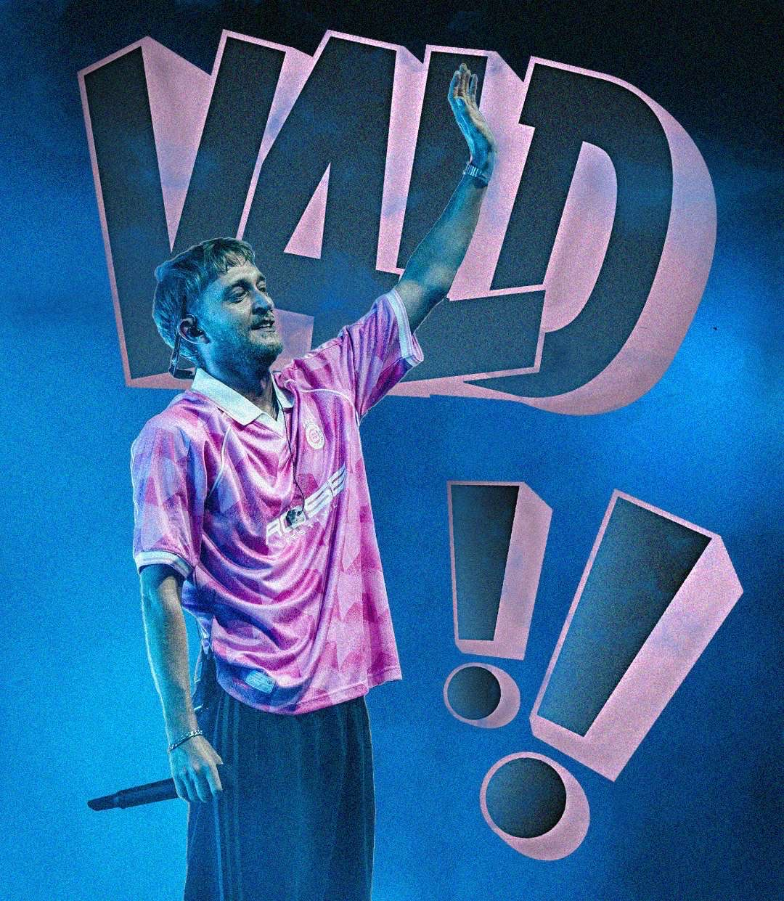
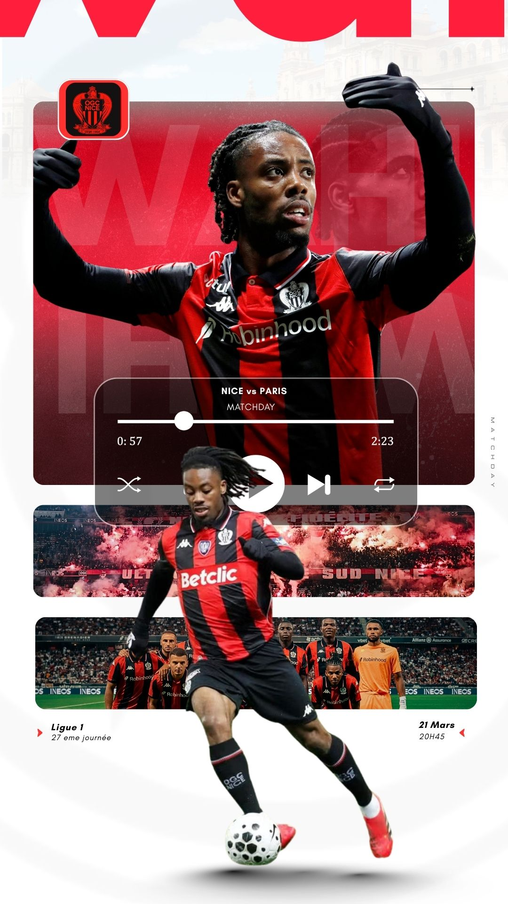

Ces affiches ont été créées dans le cadre du projet PoleWin — elles illustrent la passion F1 et servent de contenu pour les réseaux sociaux de l'application.


Compositions graphiques inspirées de l'univers du sport — mêlant design graphique et storytelling visuel.
C'est à travers mes passions pour le sport, la musique et la photographie que je développe ma créativité. Je réalise des visuels inspirés de l'univers du sport, en mettant en avant des sportifs et des événements à travers des affiches et des compositions graphiques.


